Web Proxies
Web Proxies
Today, most modern web and mobile applications work by continuously connecting to back-end servers to send and receive data and then processing this data on the user’s device, like their web browsers or mobile phones. With most applications heavily relying on back-end servers to process data, testing and securing the back-end servers is quickly becoming more important.
Testing web requests to back-end servers make up the bulk of Web Application Penetration Testing, which includes concepts that apply to both web and mobile applications. To capture the requests and traffic passing between applications and back-end servers and manipulate these types of requests for testing purposes, we need to use Web Proxies.
What Are Web Proxies?
Web proxies are specialized tools that can be set up between a browser/mobile application and a back-end server to capture and view all the web requests being sent between both ends, essentially acting as man-in-the-middle (MITM) tools.
Uses of Web Proxies
- Web application vulnerability scanning
- Web fuzzing
- Web crawling
- Web application mapping
- Web request analysis
- Web configuration testing
- Code reviews
Burp Suite
Burp Suite (Burp) -pronounced Burp Sweet- is the most common web proxy for web penetration testing. It has an excellent user interface for its various features and even provides a built-in Chromium browser to test web applications. Certain Burp features are only available in the commercial version Burp Pro/Enterprise, but even the free version is an extremely powerful testing tool to keep in our arsenal.
Some of the paid-only features are:
- Active web app scanner
- Fast Burp Intruder
- The ability to load certain Burp Extensions
The community free version of Burp Suite should be enough for most penetration testers. Once we start more advanced web application penetration testing, the pro features may become handy. Most of the features we will cover in this module are available in the community free version of Burp Suite, but we will also touch upon some of the pro features, like the Active Web App Scanner.
Tip: If you have an educational or business email address, then you can apply for a free trial of Burp Pro at this link to be able to follow along with some of the Burp Pro only features showcased later in this module.
Tip
If you have an educational or business email address, then you can apply for a free trial of Burp Pro at this link to be able to follow along with some of the Burp Pro only features showcased later in this module.
OWASP Zed Attack Proxy (ZAP)
OWASP Zed Attack Proxy (ZAP) is another common web proxy tool for web penetration testing. ZAP is a free and open-source project initiated by the Open Web Application Security Project (OWASP) and maintained by the community, so it has no paid-only features as Burp does. It has grown significantly over the past few years and is quickly gaining market recognition as the leading open-source web proxy tool.
In the end, learning both tools can be quite similar and will provide us with options for every situation through a web pentest, and we can choose to use whichever one we find more suitable for our needs. In some instances, we may not see enough value to justify a paid Burp subscription, and we may switch ZAP to have a completely open and free experience. In other situations where we want a more mature solution for advanced pentests or corporate pentesting, we may find the value provided by Burp Pro to be justified and may switch to Burp for these features.
Setting Up
Once we start up Burp, we are prompted to create a new project. If we are running the community version, we would only be able to use temporary projects without the ability to save our progress and carry on later:
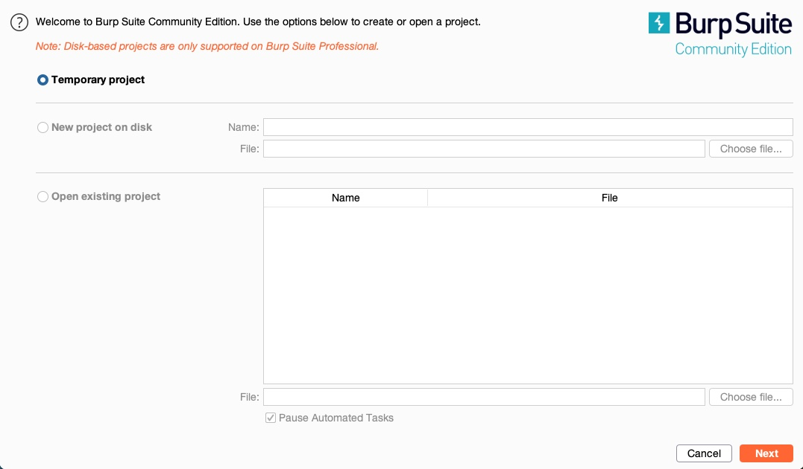 If we are using the pro/enterprise version, we will have the option to either start a new project or open an existing project. 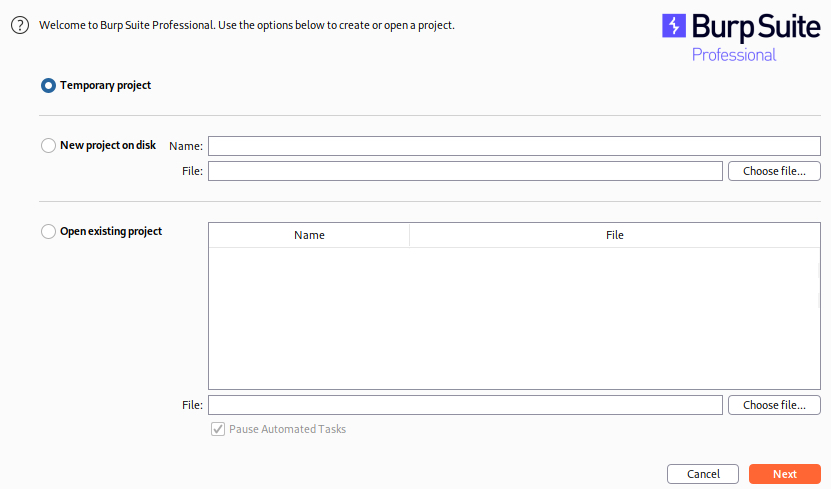
We may need to save our progress if we were pentesting huge web applications or running an Active Web Scan. However, we may not need to save our progress and, in many cases, can start a temporary project every time.
So, let’s select temporary project, and click continue. Once we do, we will be prompted to either use Burp Default Configurations, or to Load a Configuration File, and we’ll choose the first option:
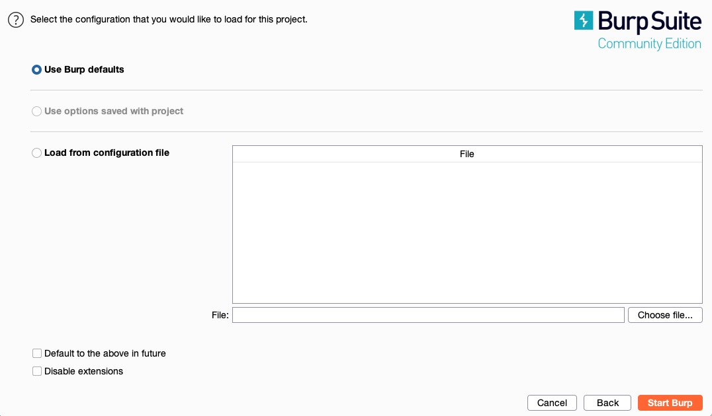
ZAP
We can download ZAP from its download page, choose the installer that fits our operating system, and follow the basic installation instructions to get it installed.
To get started with ZAP, we can launch it from the terminal with the zaproxy command or access it from the application menu like Burp.
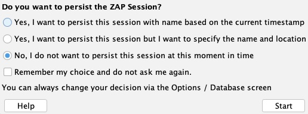
Pre-Configured Browser
To use the tools as web proxies, we must configure our browser proxy settings to use them as the proxy or use the pre-configured browser. Both tools have a pre-configured browser that comes with pre-configured proxy settings and the CA certificates pre-installed, making starting a web penetration test very quick and easy.
In Burp’s (Proxy>Intercept), we can click on Open Browser, which will open Burp’s pre-configured browser, and automatically route all web traffic through Burp:
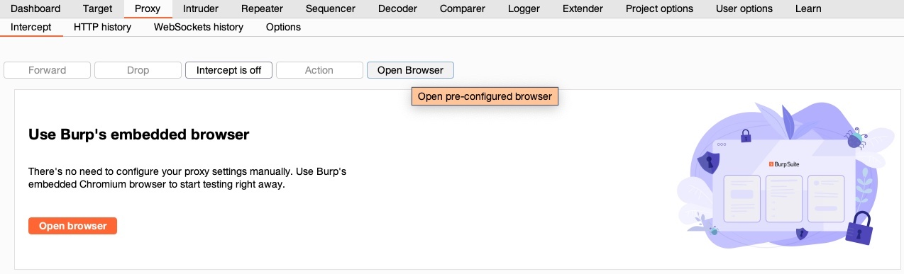
In ZAP, we can click on the Firefox browser icon at the end of the top bar, and it will open the pre-configured browser:
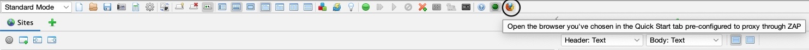
Proxy Setup
In many cases, we may want to use a real browser for pentesting, like Firefox. To use Firefox with our web proxy tools, we must first configure it to use them as the proxy. We can manually go to Firefox preferences and set up the proxy to use the web proxy listening port. Both Burp and ZAP use port 8080 by default, but we can use any available port. If we choose a port that is in use, the proxy will fail to start, and we will receive an error message.
Note
In case we wanted to serve the web proxy on a different port, we can do that in Burp under (Proxy>Options), or in ZAP under (Tools>Options>Local Proxies). In both cases, we must ensure that the proxy configured in Firefox uses the same port.
Instead of manually switching the proxy, we can utilize the Firefox extension Foxy Proxy to easily and quickly change the Firefox proxy.
Once we have the extension added, we can configure the web proxy on it by clicking on its icon on Firefox top bar and then choosing options: 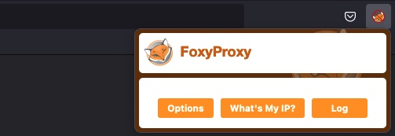
Once we’re on the options page, we can click on add on the left pane, and then use 127.0.0.1 as the IP, and 8080 as the port, and name itBurp or ZAP:
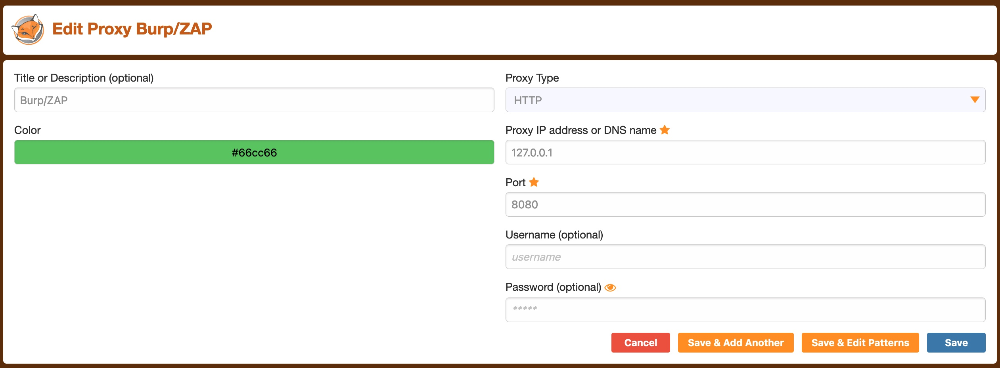
Installing CA Certificate
Another important step when using Burp Proxy/ZAP with our browser is to install the web proxy’s CA Certificates. If we don’t do this step, some HTTPS traffic may not get properly routed, or we may need to click accept every time Firefox needs to send an HTTPS request.
We can install Burp’s certificate once we select Burp as our proxy in Foxy Proxy, by browsing to http://burp, and download the certificate from there by clicking on CA Certificate:
To get ZAP’s certificate, we can go to (Tools>Options>Dynamic SSL Certificate), then click on Save:
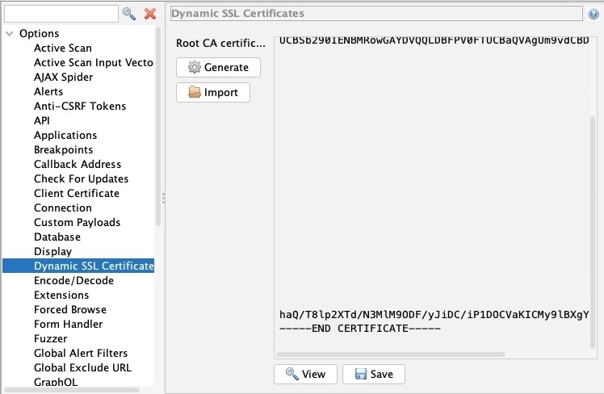
We can also change our certificate by generating a new one with the Generate button.
Once we have our certificates, we can install them within Firefox by browsing to about:preferences#privacy, scrolling to the bottom, and clicking View Certificates:
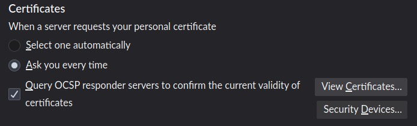
After that, we can select the Authoritiestab, and then click on import, and select the downloaded CA certificate:
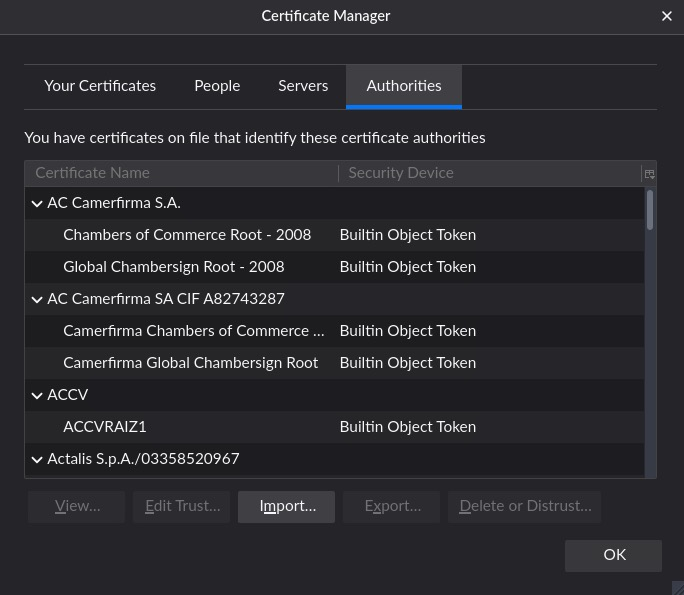
Finally, we must select Trust this CA to identify websites and Trust this CA to identify email users, and then click OK:
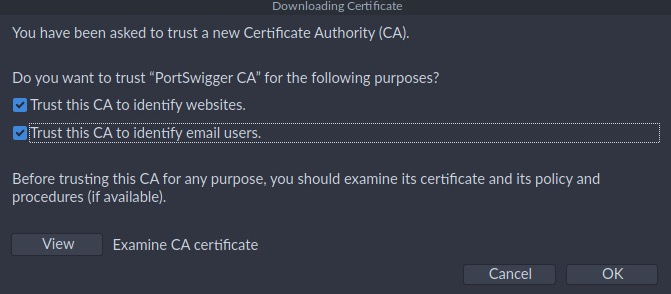
Once we install the certificate and configure the Firefox proxy, all Firefox web traffic will start routing through our web proxy.
Intercepting Web Requests
Now that we have set up our proxy, we can use it to intercept and manipulate various HTTP requests sent by the web application we are testing. We’ll start by learning how to intercept web requests, change them, and then send them through to their intended destination.
Burp
In Burp, we can navigate to the Proxy tab, and request interception should be on by default. If we want to turn request interception on or off, we may go to the Intercept sub-tab and click on Intercept is on/off button to do so:
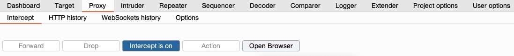
ZAP
In ZAP, interception is off by default, as shown by the green button on the top bar (green indicates that requests can pass and not be intercepted). We can click on this button to turn the Request Interception on or off, or we can use the shortcut [CTRL+B] to toggle it on or off:
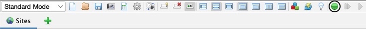
Intercepting Responses
In some instances, we may need to intercept the HTTP responses from the server before they reach the browser. This can be useful when we want to change how a specific web page looks, like enabling certain disabled fields or showing certain hidden fields, which may help us in our penetration testing activities.
Burp
In Burp, we can enable response interception by going to (Proxy>Options) and enabling Intercept Response under Intercept Server Responses:
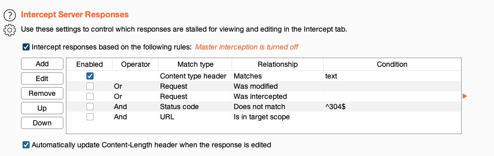
After that, we can enable request interception once more and refresh the page with [CTRL+SHIFT+R] in our browser (to force a full refresh). When we go back to Burp, we should see the intercepted request, and we can click on forward. Once we forward the request, we’ll see our intercepted response:
ZAP
Let’s try to see how we can do the same with ZAP, when our requests are intercepted by ZAP, we can click on Step, and it will send the request and automatically intercept the response:
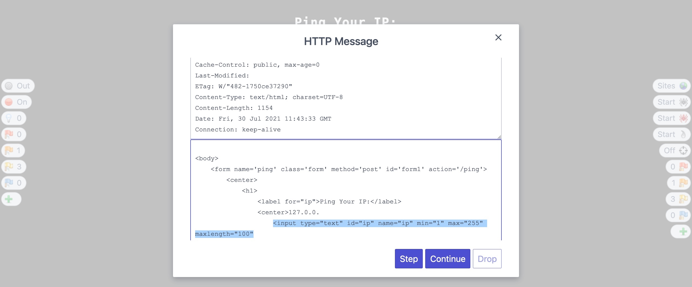
However, ZAP HUD also has another powerful feature that can help us in cases like this. While in many instances we may need to intercept the response to make custom changes, if all we wanted was to enable disabled input fields or show hidden input fields, then we can click on the third button on the left (the light bulb icon), and it will enable/show these fields without us having to intercept the response or refresh the page.
Automatic Modification
We may want to apply certain modifications to all outgoing HTTP requests or all incoming HTTP responses in certain situations. In these cases, we can utilize automatic modifications based on rules we set, so the web proxy tools will automatically apply them.
Automatic Request Modification
We can choose to match any text within our requests, either in the request header or request body, and then replace them with different text.
Burp Match and Replace
We can go to (Proxy>Options>Match and Replace) and click on Add in Burp. As the below screenshot shows, we will set the following options:
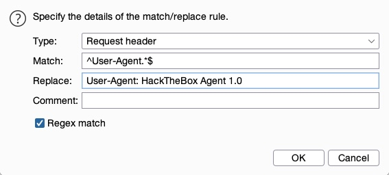
Once we enter the above options and click Ok, our new Match and Replace option will be added and enabled and will start automatically replacing the User-Agent header in our requests with our new User-Agent. We can verify that by visiting any website using the pre-configured Burp browser and reviewing the intercepted request. We will see that our User-Agent has indeed been automatically replaced:
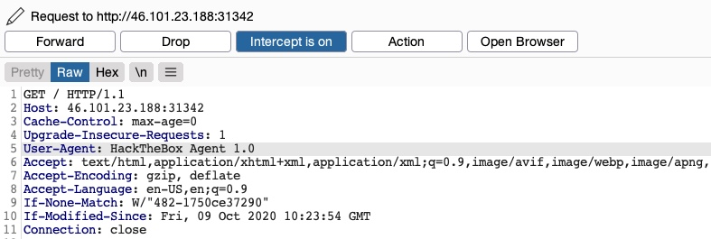
Automatic Response Modification
Go to (Proxy>Options>Match and Replace) in Burp to add another rule. This time we will use the type of Response body since the change we want to make exists in the response’s body and not in its headers. In this case, we do not have to use regex as we know the exact string we want to replace, though it is possible to use regex to do the same thing if we prefer.
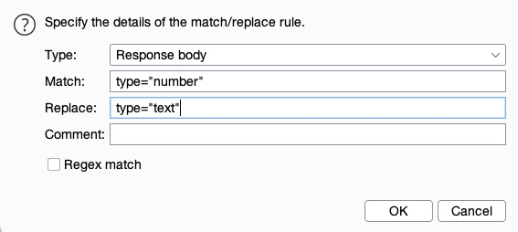
Repeating Requests
We successfully bypassed the input validation to use a non-numeric input to reach command injection on the remote server.
As you can imagine, if we would do this for each command, it would take us forever to enumerate a system, as each command would require 5-6 steps to get executed. However, for such repetitive tasks, we can utilize request repeating to make this process significantly easier.
Request repeating allows us to resend any web request that has previously gone through the web proxy.
This allows us to make quick changes to any request before we send it, then get the response within our tools without intercepting and modifying each request.
Proxy History
To start, we can view the HTTP requests history in Burp at (Proxy>HTTP History):
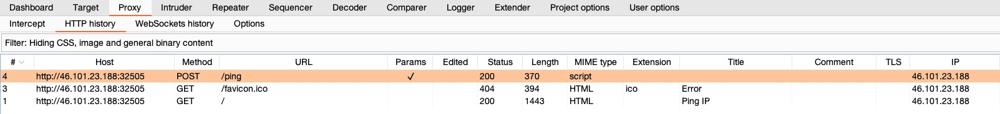
In ZAP HUD, we can find it in the bottom History pane or ZAP’s main UI at the bottom History tab as well:
Note
Both tools also maintain WebSockets history, which shows all connections initiated by the web application even after being loaded, like asynchronous updates and data fetching. WebSockets can be useful when performing advanced web penetration testing, and are out of the scope of this module.
If we click on any request in the history in either tool, its details will be shown:
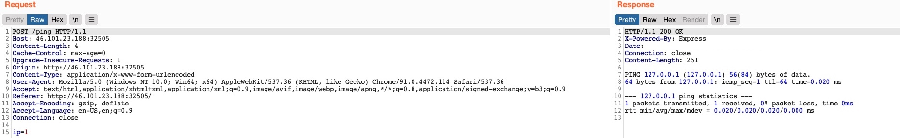
Repeating Requests
Once we locate the request we want to repeat, we can click [CTRL+R] in Burp to send it to the Repeater tab, and then we can either navigate to the Repeater tab or click [CTRL+SHIFT+R] to go to it directly. Once in Repeater, we can click on Send to send the request:
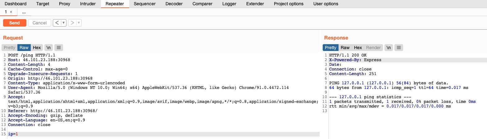
Tip
We can also right-click on the request and select Change Request Method to change the HTTP method between POST/GET without having to rewrite the entire request.
ZAP
In ZAP, once we locate our request, we can right-click on it and select Open/Resend with Request Editor, which would open the request editor window, and allow us to resend the request with the Send button to send our request:
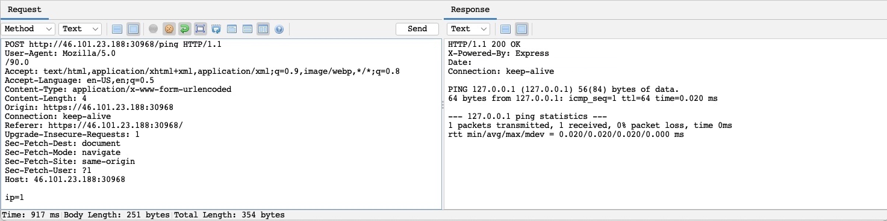
We can also see the Method drop-down menu, allowing us to quickly switch the request method to any other HTTP method.
Encoding/Decoding
As we modify and send custom HTTP requests, we may have to perform various types of encoding and decoding to interact with the webserver properly. Both tools have built-in encoders that can help us in quickly encoding and decoding various types of text.
URL Encoding
It is essential to ensure that our request data is URL-encoded and our request headers are correctly set. Otherwise, we may get a server error in the response. This is why encoding and decoding data becomes essential as we modify and repeat web requests. Some of the key characters we need to encode are:
Spaces: May indicate the end of request data if not encoded&: Otherwise interpreted as a parameter delimiter#: Otherwise interpreted as a fragment identifier
To URL-encode text in Burp Repeater, we can select that text and right-click on it, then select (Convert Selection>URL>URL encode key characters), or by selecting the text and clicking [CTRL+U]. Burp also supports URL-encoding as we type if we right-click and enable that option, which will encode all of our text as we type it. On the other hand, ZAP should automatically URL-encode all of our request data in the background before sending the request, though we may not see that explicitly.
There are other types of URL-encoding, like Full URL-Encoding or Unicode URL encoding, which may also be helpful for requests with many special characters.
Decoding
While URL-encoding is key to HTTP requests, it is not the only type of encoding we will encounter. It is very common for web applications to encode their data, so we should be able to quickly decode that data to examine the original text. On the other hand, back-end servers may expect data to be encoded in a particular format or with a specific encoder, so we need to be able to quickly encode our data before we send it.
The following are some of the other types of encoders supported by both tools:
While URL-encoding is key to HTTP requests, it is not the only type of encoding we will encounter. It is very common for web applications to encode their data, so we should be able to quickly decode that data to examine the original text. On the other hand, back-end servers may expect data to be encoded in a particular format or with a specific encoder, so we need to be able to quickly encode our data before we send it.
The following are some of the other types of encoders supported by both tools:
- HTML
- Unicode
- Base64
- ASCII hex
For example, perhaps we came across the following cookie that is base64 encoded, and we need to decode it:
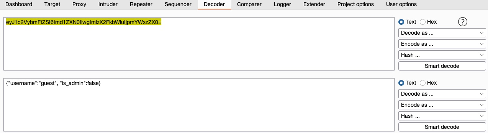In recent versions of Burp, we can also use the Burp Inspector tool to perform encoding and decoding (among other things), which can be found in various places like Burp Proxy or Burp Repeater:
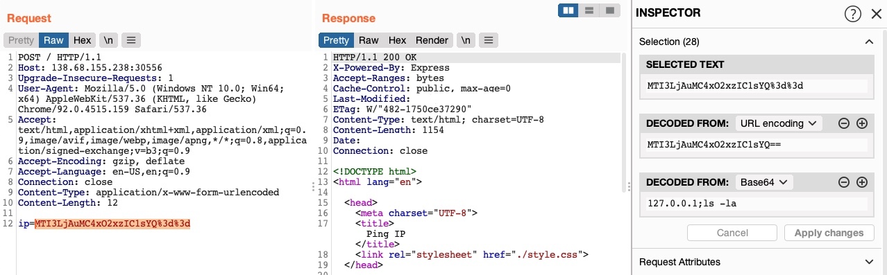
Encoding
As we can see, the text holds the value {"username":"guest", "is_admin":false}. So, if we were performing a penetration test on a web application and find that the cookie holds this value, we may want to test modifying it to see whether it changes our user privileges.
So, we can copy the above value, change guest to admin and false to true, and try to encode it again using its original encoding method (base64):
Decode the flag
Tip
base64 and URL
VTJ4U1VrNUZjRlZXVkVKTFZrWkdOVk5zVW10aFZYQlZWRmh3UzFaR2NITlRiRkphWld0d1ZWUllaRXRXUm10M1UyeFNUbVZGY0ZWWGJYaExWa1V3ZVZOc1VsZGlWWEJWVjIxNFMxWkZNVFJUYkZKaFlrVndWVmR0YUV0V1JUQjNVMnhTYTJGM1BUMD0=
Intro to Proxychains
Proxying Tools
An important aspect of using web proxies is enabling the interception of web requests made by command-line tools and thick client applications. This gives us transparency into the web requests made by these applications and allows us to utilize all of the different proxy features we have used with web applications.
To route all web requests made by a specific tool through our web proxy tools, we have to set them up as the tool’s proxy (i.e. http://127.0.0.1:8080), similarly to what we did with our browsers. Each tool may have a different method for setting its proxy, so we may have to investigate how to do so for each one.
Note
Proxying tools usually slows them down, therefore, only proxy tools when you need to investigate their requests, and not for normal usage
- Tor and proxychains
Note
Use tor proxy with a vpn If your choise in NordVpn, the form the terminal use --legacy with nordvpn login.
PROXYCHAINS FEATURES
- Support SOCKS5, SOCKS4, and HTTP CONNECT proxy servers.
- Proxychains can be mixed up with a different proxy types in a list
- Proxychains also supports any kinds of chaining option methods, like: random, which takes a random proxy in the list stored in a configuration file, or chaining proxies in the exact order list, different proxies are separated by a new line in a file. There is also a dynamic option, that lets Proxychains go through the live only proxies, it will exclude the dead or unreachable proxies, the dynamic option often called smart option.
- Proxychains can be used with servers, like squid, sendmail, etc.
- Proxychains is capable to do DNS resolving through proxy.
- Proxychains can handle any TCP client application, ie., nmap, telnet.
PROXYCHAINS SYNTAX
Add command “proxychains” for every job, that means we enable Proxychains service. For example, we want to scan available hosts and its ports in our network using Nmap using Proxychains the command should look like this:
NMAP
proxychains nmap 192.168.1.1/24
Slehee@htb[/htb]$ nmap -h | grep -i prox
--proxies <url1,[url2],...>: Relay connections through HTTP/SOCKS4 proxies
As we can see, we can use the --proxies flag. We should also add the -Pn flag to skip host discovery (as recommended on the man page). Finally, we’ll also use the -sC flag to examine what an nmap script scan does:
Slehee@htb[/htb]$ nmap --proxies http://127.0.0.1:8080 SERVER_IP -pPORT -Pn -sC
Starting Nmap 7.91 ( https://nmap.org )
Nmap scan report for SERVER_IP
Host is up (0.11s latency).
PORT STATE SERVICE
PORT/tcp open unknown
Nmap done: 1 IP address (1 host up) scanned in 0.49 seconds
Note
Nmap’s built-in proxy is still in its experimental phase, as mentioned by its manual (man nmap), so not all functions or traffic may be routed through the proxy. In these cases, we can simply resort to proxychains, as we did earlier.
proxychains nmap 192.168.1.1/24
Proxychains configuration file located on /etc/proxychains.conf
By default proxychains directly sends the traffic first through our host at 127.0.0.1 on port 9050 (the default Tor configuration). If you are using Tor, leave this as it is. If you are not using Tor, you will need to comment out this line.
We should also enable Quiet Mode to reduce noise by un-commenting quiet_mode. Once that’s done, we can prepend proxychains to any command, and the traffic of that command should be routed through proxychains (i.e., our web proxy). For example, let’s try using cURL on one of our previous exercises:
Metasploit
Finally, let’s try to proxy web traffic made by Metasploit modules to better investigate and debug them. We should begin by starting Metasploit with msfconsole. Then, to set a proxy for any exploit within Metasploit, we can use the set PROXIES flag. Let’s try the robots_txt scanner as an example and run it against one of our previous exercises:
Slehee@htb[/htb]$ msfconsole
msf6 > use auxiliary/scanner/http/robots_txt
msf6 auxiliary(scanner/http/robots_txt) > set PROXIES HTTP:127.0.0.1:8080
PROXIES => HTTP:127.0.0.1:8080
msf6 auxiliary(scanner/http/robots_txt) > set RHOST SERVER_IP
RHOST => SERVER_IP
msf6 auxiliary(scanner/http/robots_txt) > set RPORT PORT
RPORT => PORT
msf6 auxiliary(scanner/http/robots_txt) > run
[*] Scanned 1 of 1 hosts (100% complete)
[*] Auxiliary module execution completed
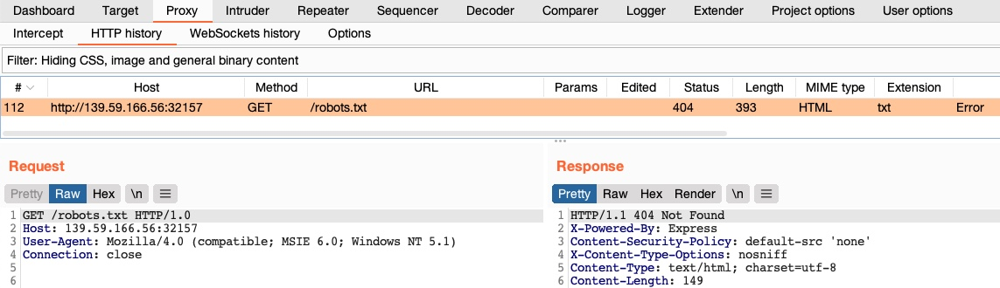
We can similarly use our web proxies with other tools and applications, including scripts and thick clients. All we have to do is set the proxy of each tool to use our web proxy. This allows us to examine exactly what these tools are sending and receiving and potentially repeat and modify their requests while performing web application penetration testing.
Burp Intruder
Both Burp and ZAP provide additional features other than the default web proxy, which are essential for web application penetration testing. Two of the most important extra features are web fuzzers andweb scanners. The built-in web fuzzers are powerful tools that act as web fuzzing, enumeration, and brute-forcing tools. This may also act as an alternative for many of the CLI-based fuzzers we use, like ffuf, dirbuster, gobuster, wfuzz, among others.
Burp’s web fuzzer is called Burp Intruder, and can be used to fuzz pages, directories, sub-domains, parameters, parameters values, and many other things. Though it is much more advanced than most CLI-based web fuzzing tools, the free Burp Community version is throttled at a speed of 1 request per second, making it extremely slow compared to CLI-based web fuzzing tools, which can usually read up to 10k requests per second. This is why we would only use the free version of Burp Intruder for short queries. The Pro version has unlimited speed, which can rival common web fuzzing tools, in addition to the very useful features of Burp Intruder. This makes it one of the best web fuzzing and brute-forcing tools.
We can then go to Intruder by clicking on its tab or with the shortcut [CTRL+SHIFT+I], which takes us right to Burp Intruder:
Positions
The tab, ‘Positions’, is where we place the payload position pointer, which is the point where words from our wordlist will be placed and iterated over. We will be demonstrating how to fuzz web directories, which is similar to what’s done by tools like ffuf or gobuster.
To check whether a web directory exists, our fuzzing should be in ‘GET /DIRECTORY/’, such that existing pages would return 200 OK, otherwise we’d get 404 NOT FOUND. So, we will need to select DIRECTORY as the payload position, by either wrapping it with § or by selecting the word DIRECTORY and clicking on the the Add § button: 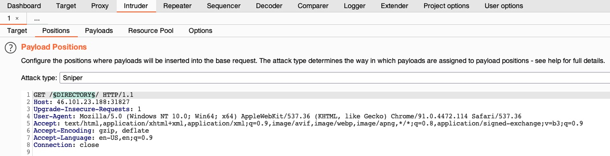
Tip
the DIRECTORY in this case is the pointer’s name, which can be anything, and can be used to refer to each pointer, in case we are using more than position with different wordlists for each.
The final thing to select in the target tab is the Attack Type. The attack type defines how many payload pointers are used and determines which payload is assigned to which position. For simplicity, we’ll stick to the first type, Sniper, which uses only one position. Try clicking on the ? at the top of the window to read more about attack types, or check out this link.
Note
Be sure to leave the extra two lines at the end of the request, otherwise we may get an error response from the server.
Payloads
The Payloads tab, we get to choose and customize our payloads/wordlists. This payload/wordlist is what would be iterated over, and each element/line of it would be placed and tested one by one in the Payload Position we chose earlier. There are four main things we need to configure:
- Payload Sets
- Payload Options
- Payload Processing
- Payload Encoding
Payload Sets
The first thing we must configure is the Payload Set. The payload set identifies the Payload number, depending on the attack type and number of Payloads we used in the Payload Position Pointers:
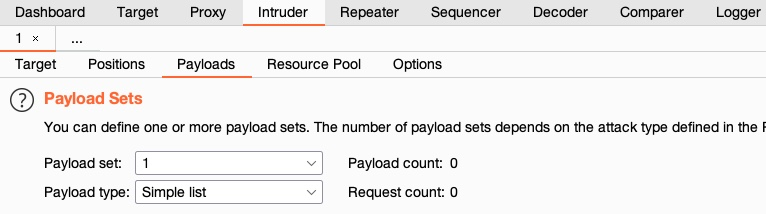
In this case, we only have one Payload Set, as we chose the Sniper Attack type with only one payload position. If we have chosen theCluster Bomb` attack type, for example, and added several payload positions, we would get more payload sets to choose from and choose different options for each. In our case, we’ll select 1 for the payload set.
Next, we need to select the Payload Type, which is the type of payloads/wordlists we will be using. Burp provides a variety of Payload Types, each of which acts in a certain way. For example:
-
Simple List: The basic and most fundamental type. We provide a wordlist, and Intruder iterates over each line in it.
-
Runtime file: Similar to Simple List, but loads line-by-line as the scan runs to avoid excessive memory usage by Burp.
-
Character Substitution: Lets us specify a list of characters and their replacements, and Burp Intruder tries all potential permutations.
Payload Options
Next, we must specify the Payload Options, which is different for each Payload Type we select in Payload Sets. For a Simple List, we have to create or load a wordlist. To do so, we can input each item manually by clicking Add, which would build our wordlist on the fly. The other more common option is to click on Load, and then select a file to load into Burp Intruder.
We will select /opt/useful/SecLists/Discovery/Web-Content/common.txt as our wordlist. We can see that Burp Intruder loads all lines of our wordlist into the Payload Options table:
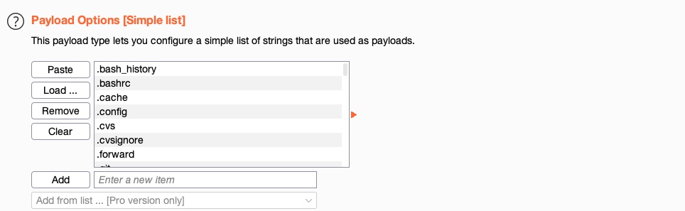
We can add another wordlist or manually add a few items, and they would be appended to the same list of items. We can use this to combine multiple wordlists or create customized wordlists. In Burp Pro, we also can select from a list of existing wordlists contained within Burp by choosing from the Add from list menu option.
Tip
In case you wanted to use a very large wordlist, it’s best to use Runtime file as the Payload Type instead of Simple List, so that Burp Intruder won’t have to load the entire wordlist in advance, which may throttle memory usage.
Payload Processing
Another option we can apply is Payload Processing, which allows us to determine fuzzing rules over the loaded wordlist. For example, if we wanted to add an extension after our payload item, or if we wanted to filter the wordlist based on specific criteria, we can do so with payload processing.
Let’s try adding a rule that skips any lines that start with a . (as shown in the wordlist screenshot earlier). We can do that by clicking on the Add button and then selecting Skip if matches regex, which allows us to provide a regex pattern for items we want to skip. Then, we can provide a regex pattern that matches lines starting with ., which is: ^\..*$:
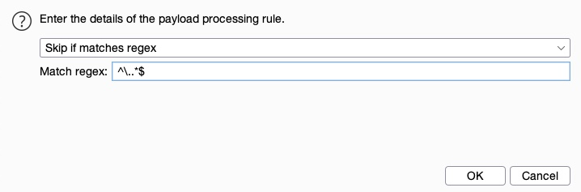
Payload Encoding
The fourth and final option we can apply is Payload Encoding, enabling us to enable or disable Payload URL-encoding.
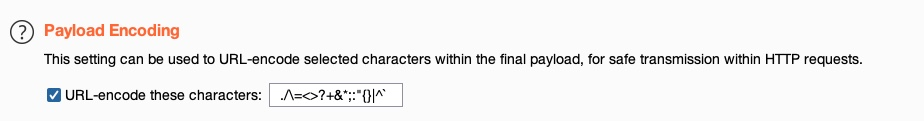
Options
Finally, we can customize our attack options from the Options tab. There are many options we can customize (or leave at default) for our attack. For example, we can set the number of retried on failure and pause before retry to 0.
Another useful option is the Grep - Match, which enables us to flag specific requests depending on their responses. As we are fuzzing web directories, we are only interested in responses with HTTP code 200 OK. So, we’ll first enable it and then click Clear to clear the current list. After that, we can type 200 OK to match any requests with this string and click Add to add the new rule. Finally, we’ll also disable Exclude HTTP Headers, as what we are looking for is in the HTTP header:
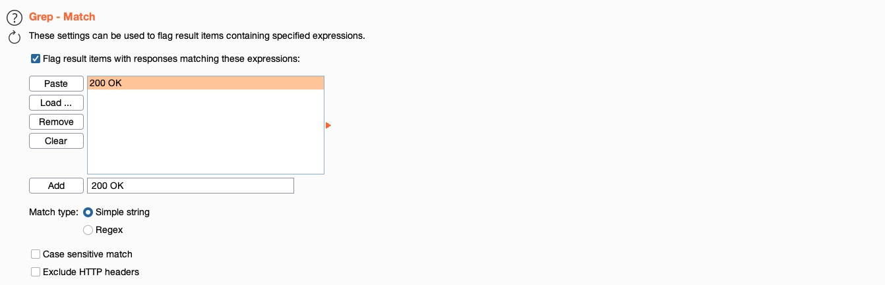
Attack
Now that everything is properly set up, we can click on the Start Attack button and wait for our attack to finish. Once again, in the free Community Version, these attacks would be very slow and take a considerable amount of time for longer wordlists.
ZAP Fuzzer
ZAP’s Fuzzer is called (ZAP Fuzzer). It can be very powerful for fuzzing various web end-points, though it is missing some of the features provided by Burp Intruder. ZAP Fuzzer, however, does not throttle the fuzzing speed, which makes it much more useful than Burp’s free Intruder.
Fuzz
To start our fuzzing, we will visit the URL from the exercise at the end of this section to capture a sample request. As we will be fuzzing for directories, let’s visit <http://SERVER_IP:PORT/test/> to place our fuzzing location on test later on. Once we locate our request in the proxy history, we will right-click on it and select (Attack>Fuzz), which will open the Fuzzer window:
The main options we need to configure for our Fuzzer attack are:
- Fuzz Location
- Payloads
- Processors
- Options
Burp Scanner
An essential feature of web proxy tools is their web scanners. Burp Suite comes with Burp Scanner, a powerful scanner for various types of web vulnerabilities, using a Crawler for building the website structure, and Scanner for passive and active scanning.
Burp Scanner is a Pro-Only feature, and it is not available in the free Community version of Burp Suite. However, given the wide scope that Burp Scanner covers and the advanced features it includes, it makes it an enterprise-level tool, and as such, it is expected to be a paid feature.
ZAP Scanner
ZAP also comes bundled with a Web Scanner similar to Burp Scanner. ZAP Scanner is capable of building site maps using ZAP Spider and performing both passive and active scans to look for various types of vulnerabilities.
Spider
Let’s start with ZAP Spider, which is similar to the Crawler feature in Burp. To start a Spider scan on any website, we can locate a request from our History tab and select (Attack>Spider) from the right-click menu.
Another option is to use the HUD in the pre-configured browser. Once we visit the page or website we want to start our Spider scan on, we can click on the second button on the right pane (Spider Start), which would prompt us to start the scan.
Note
When we click on the Spider button, ZAP may tell us that the current website is not in our scope, and will ask us to automatically add it to the scope before starting the scan, to which we can say ‘Yes’. The Scope is the set of URLs ZAP will test if we start a generic scan, and it can be customized by us to scan multiple websites and URLs. Try to add multiple targets to the scope to see how the scan would run differently.